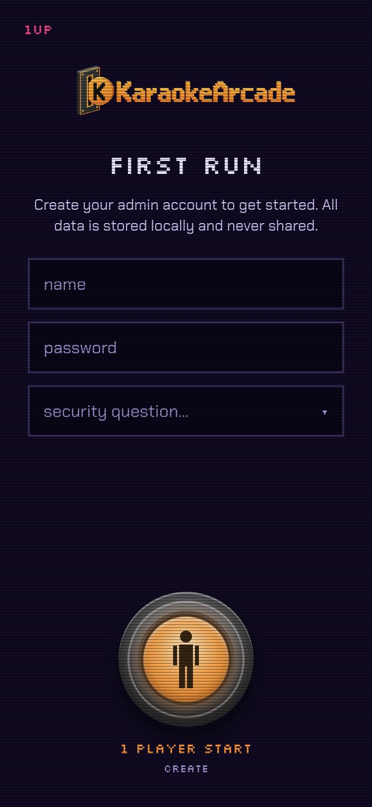
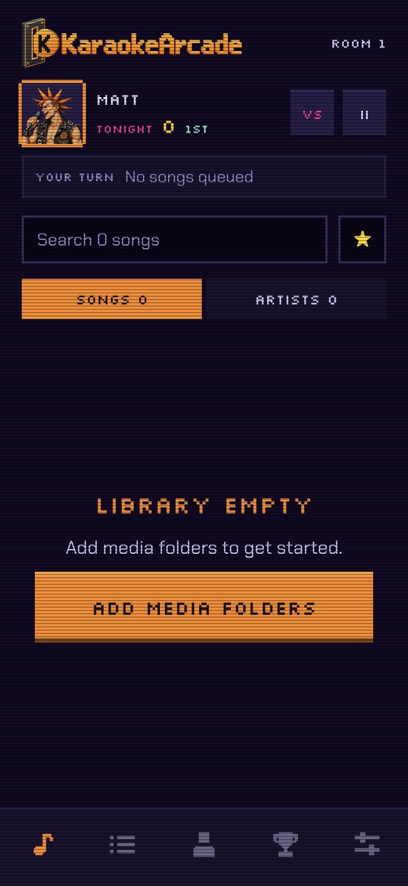

Getting started
You need three things to start with KaraokeArcade:
Songs: KaraokeArcade plays MP4 video files, and MP3 or M4A audio files with the lyrics in a CDG file next to them (MP3+G), loose or zipped. See the F.A.Q. for places to get songs.
Server: a Windows PC, a Mac, a Raspberry Pi or a NAS. KaraokeArcade Server runs on almost anything. It serves the app and your media files.
Player: the machine connected to your TV and speakers. It runs the player in a browser. It can be the server machine, but it does not have to be.
You do not need a microphone. The player only outputs music, so your audio setup can be as simple or as complex as you like. The one exception is crowd-noise battle scoring. See the F.A.Q..
1. Install KaraokeArcade Server
On the machine that serves the app and your media files, install and run KaraokeArcade Server. Then come back here.
2. Open the server URL
When the server runs, open the app at the server URL in a browser.
3. Create the admin account
The first screen is First run. Type a name and a strong password, pick a security question and answer it, then push the start button.


Store the password somewhere safe. Admins manage users, rooms, the player and the media folders. The security question lets you reset the password from the sign-in screen.
Next, select your singer. This is the character the room sees as you. Then read How to score and push Continue.
4. Add a media folder
The library is empty. Push Add media folders, or open the Admin tab.


In the Media folders panel, push Add folder and pick the folder that holds your songs. The scanner starts at once.
5. Queue a song
When the scan is done, the Songs tab lists your artists and songs. If they do not appear, make sure the files are named "Artist - Title" and are a supported format.


Tap a song to queue it. Your turn card at the top shows your place. Tap the song again to take it back out.
6. Start the player
The player is part of the app. It runs fullscreen on the machine connected to your TV and speakers. On that machine, open the server URL and sign in with your admin account.
Open the Admin tab. The Player panel says No player in room. Push Open player here.

The TV shows Scan to play with the room's QR code. Push Start on the TV. The first song plays.

7. Next steps
Guests scan the QR code on the TV to join. Read the app documentation for the turn card, trivia, singer battles, points and the admin panels.
Found a bug or have a request? Open an issue.
KaraokeArcade is a fork of Karaoke Eternal. If you can, please sponsor the upstream project.